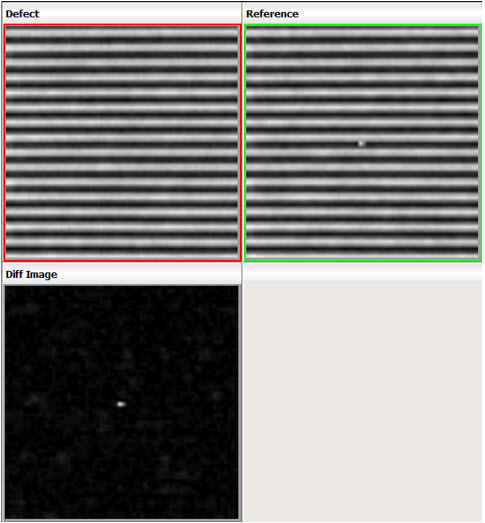

Calibre DefectClassify Classification Tiers
Defect Type Classification
Calibre DefectClassify identifies a number of different types of defects. Defects can be classified into one of the two categories:
Real — Defects that are physically present on the mask. These defects must be characterized, and then repaired or removed accordingly. Real defects include general dark and clear defects, surface contaminations, large defects, assist feature defects and fill defects.
False — Defects that are not on the mask, but are instead tool or process related. Examples include nuisance defects and camera defects.
Combinations of real and false defects are frequent. When a false signal is identified, it is compensated for where possible. For example, if an alignment issue arises for two images, the two images are aligned during the process. After compensation, they are re-analyzed for the presence of a secondary real defect before discarding the defect as a false defect.
Classification of defects as real or false is an important part of improving the efficiency of a defect review process. This is because real defects, being actually present on the mask, require more detailed and precise characterization, which impacts the effectiveness of the repair processes employed. Higher false defects require more time for their review, decreasing the review throughput.
Incorrectly classifying real defects as false is also an issue as that leads to a physical defect being ignored on the mask. Combined with the fact that a significant number of false defects are caught by the inspection machines, reliable separation of false from real defects makes considerable difference to classification efficiency.
The following is complete list of defect types that are identified by Calibre DefectClassify (these are the actual classification names assigned to defects):
Dark Defects
These are defects for which the pixel intensities in the defect area of the defect image are less than those in the corresponding region of reference image. These are further classified into the following sub-categories:
IsolatedDark
These defects do not impact any pattern edge on the mask. The parameters commonPatternDistanceFromDefectSignal (for aerial and reflected inspections) highresCommonPatternDistanceFromDefectSignal (for highres inspections) store the threshold values that determine the distance from an edge and are enough for the defect to be treated as isolated. Calibre DefectClassify detects this type of defect in D2D and NonD2D inspection modes. These parameters are described in “Mask Pattern Classification Configuration File”.
Figure 1. IsolatedDark DefectIsolatedDarkLowTrans
These defects are similar to IsolatedDark except the transmittance value is lower than the value provided using the parameter transmissionThresholdForIsolatedOpaque (described in “Mask Pattern Classification Configuration File”). The transmittance value of an isolated blob is calculated as a ratio:
(GL value of the darkest pixel in the blob) / (maximum GL value assigned to pixels in large clear regions by the inspection machine)
For example, if the GL value of the darkest pixel in the blob is 170 and the maximum GL value of pixel in the larger clear region is 255, the transmittance value is 170 / 255 = 0.66. If the value is less than the value set by transmissionThresholdForIsolatedOpaque, the defect is classified as IsolatedDarkLowTrans; otherwise, it is classified as IsolatedDark. Calibre DefectClassify detects this type of defect in D2D and NonD2D inspection modes.
OnEdgeDark
These are dark defects where their distances to a pattern edge are less than the threshold specified by the parameters commonPatternDistanceFromDefectSignal and highresCommonPatternDistanceFromDefectSignal (see “Mask Pattern Classification Configuration File”), and affect a single pattern edge. Calibre DefectClassify detects this type of defect in D2D and NonD2D inspection modes.
Figure 2. OnEdgeDark DefectMultipleEdgesDark — These defects are similar to OnEdge defects except they affect multiple pattern edges. Calibre DefectClassify detects this type of defect in D2D inspection mode only.
Figure 3. MultipleEdgesDark
Clear Defects
These are defects for which the pixel intensities in the defect area of the defect image are higher than those in the corresponding region of reference image. These are further classified into:
IsolatedClear
These defects are similar to their darker counterparts. They do not impact any pattern edge on the mask. The parameters commonPatternDistanceFromDefectSignal (for aerial and reflected inspections) and highresCommonPatternDistanceFromDefectSignal (for highres inspections) store the threshold valuse that determine if the distance from an edge is far enough for the defect to be treated as isolated. These parameters are described in “Mask Pattern Classification Configuration File”. Calibre DefectClassify detects this type of defect in D2D and NonD2D inspection modes.
Figure 4. IsolatedClear DefectIsolatedClearLowTrans
These defects are similar to IsolatedClear defects, except their transmittance values are lower than 0.1. Calculation of the transmittance value of an isolated blob is the same as the defect type IsolatedDarkLowTrans. Calibre DefectClassify detects this type of defect in D2D and NonD2D inspection modes.
OnEdgeClear
These are clear defects similar to OnEdgeDark defects; their distance to a pattern edge is less than the threshold specified by the parameters commonPatternDistanceFromDefectSignal and highresCommonPatternDistanceFromDefectSignal (see “Mask Pattern Classification Configuration File”), and they affect a single pattern edge. Calibre DefectClassify detects this type of defect in D2D inspection mode only.
Figure 5. OnEdgeClear DefectMultipleEdgesClear — These defects are similar to OnEdge defects except they affect multiple pattern edges. Calibre DefectClassify detects this type of defect in D2D inspection mode only.
ClearOpaque
These defects have the characteristics of both opaque and clear defects. This means that they have an opaque region (where the defect pixel intensity is lower than the reference) and a clear region (where the defect pixel intensity is higher than the reference), and both regions exist adjacent to each other. Figure 6 shows the cross-section of this type of defect on a line-space pattern. The pixel intensities are mapped in a direction perpendicular to the line patterns. Defect pixel GL values (red) are both higher and lower than reference GL values (green) for adjacent line-space patterns (peaks correspond to line patterns and valleys are the space between patterns).
Figure 6. Cross-Section of a ClearOpaque DefectContamination
These are a group of defects that flag contamination that occurs in the mask:
Contamination
These defects are found on the top surface of the mask lining up with the chrome regions. Due to the opacity of chrome regions, they are not visible on transmitted images. Therefore, reflected images are used to identify these defects. Calibre DefectClassify detects this type of defect in D2DRef and NonD2D inspection modes.
OnDarkEdgeContamination
These are contamination defects that are closer to an edge and visible only in the reflected image. For aerial inspections, the parameter commonPatternDistanceFromDefectSignal (see “Mask Pattern Classification Configuration File”) stores the threshold value that decides when the distance from an edge is close enough for the defect to be termed as a defect on edge.
OnClearEdgeContamination
These are contamination defects that are closer to an edge and visible in the transmitted image as well. They can be identified only if both transmitted and reflected images are present. If significant difference are present on a pattern edge in the transmitted image, the defect is classified as OnClearEdgeContamination.
Repair Mark
This is a marking made on the mask indicating the location of a previously existing defect. The mask may currently have stray or residual signals from the correction process. The markings typically form a rectangle or trapezoid with each of the four corners appearing similar to Contamination defects. Any residual signals from the correction process can be observed within the boundary formed by the corner points. Because these defects are an extension of Contamination defects, Repair Marks can be seen in D2DRef and NonD2D inspection modes only.
The Repair Mark defect type has two subcategories that can be detected:
Patch — A dark rectangular area in the quartz region of the reflected image. The gray-level of the repair mark area is slightly different from the rest of the reflective white region.
Corner points — Multiple contamination-like defects forming a certain regular shape. The corner points of the repair mark area are marked on the reflective white region. The geometry between these points is typically rectangular.
MissingChrome
For this type of defect, the molybdenum silicide (MoSi) layer is exposed because of a patch of chrome is missing or was etched. The defect typically appears as a faint isolated signal or as a strong signal along feature edges. They are identified using reflected images. Chrome layer information is required to identify this type of defect. The following figure illustrates shows the two types of missing chrome defects.
Figure 7. MissingChrome Defect
LargeDefect
These defects are large in size and are classified as non-repairable.
Figure 8. LargeDefectThe following user-configurable parameters are related to this category:
nonrepairMaxDiffGLLowerLimit
nonrepairDefectArea
nonrepairNumPatternAffected
highresNonrepairMaxDiffGLLowerLimit
highresNonrepairDefectArea
highresNonrepairNumPatternAffected
Refer to “Mask Pattern Classification Configuration File” for a description of these parameters.
Assist Feature Defects
These defects are found on mask regions containing sub-resolution assist features (SRAFs). Accurate identification of SRAF regions requires layout information. As these regions do not print, it becomes impossible to identify a defect as overlaying on an SRAF region by looking at wafer-level images alone. Based on the pixel intensities of the defect relative to corresponding region in the reference image, these defects are classified as:
SRAFDark
SRAFClear
Fill Defects
These defects are found on fill regions on the mask. Similar to SRAF defects, these defects also do not print, and thus additional layer data from layout file is required to correctly classify them. Based on relative pixel intensities again, these defects are classified as:
FillDark
FillClear
Nuisance
These are a mix of insignificant small defects and defect signals resulting due to inherent electrical noise. They are referred to as “nuisance” because the defect signal intensities are not significant and are unlikely to impact mask usability.
Figure 9. Nuisance DefectReal Nuisance
These are small real defects on large patterns, corner, or assist features. They can only be detected if transmitted and reflected images are both present. Defects are differentiated with clear defects, dark defects, and SRAF defects based on residue and other defect properties. The distinguishing boundaries are defined using the following configurable thresholds set in the Calibre DefectClassify tuning file (see “Mask Pattern Classification Configuration File”): minDiffForHardDefectsOnSmoothEdgesInTransmittedImage, minDiffForHardDefectsOnSmoothEdgesInReflectedImage, minDiffForHardDefectsWithEdgeRoughnessInTransmittedImage, minDiffForHardDefectsWithEdgeRoughnessInReflectedImage, minDiffForHardDefectsOnJogsAndCornersInTransmittedImage, minDiffForHardDefectsOnJogsAndCornersInReflectedImage, and minDiffForSrafDefects.
Edge Roughness
These are small defects on large patterns and considered as False if the width of the defect blob or intensity in the difference image (the difference between the defect and reference images) is smaller. The following parameters in the Calibre DefectClassify tuning file are used to differentiate Edge Roughness from Real Nuisance (see “Mask Pattern Classification Configuration File”): maxDiffIntensityToConsiderEdgeRoughness, maxDiffIntensityToConsiderAllEdgeRoughnessAsFalse and maxDefectSizeToConsiderRestEdgeRoughnessAsFalse.
Bright Spot
These defect signals originate due to erratic camera pixels during image acquisition, leading to unnaturally strong signals without any relation to the surrounding intensities. Moreover, owing to camera issues, the defect signals from multiple defects are seen at the same frame location, which is highly unlikely for real defects.
Figure 10. Bright Spot DefectTap
These weak defect signals are a result of a corrupted data writing operation which itself can be due to different reasons. They are usually observed at boundaries of memory segment’s sizes. For example, if a segment of size 128x128 is written each time, errors are observed at pixels with coordinates around multiples of 128.
Figure 11. Tap DefectFocus
These defect signals are a result of an incorrect camera focus setting during image acquisition. Typically one of the two images, defect or reference, is out of focus.
Figure 12. Focus DefectAlignment
The defect signals in this case are due to misalignment between the defect and reference images.
Figure 13. Alignment Defect
Printability Classification
Printability classification refers to the impact of a defect. For aerial and simulated highres inspections, the classification correlates to the wafer-level impact of the defect. However, for reflected inspection printability, the classification refers to the severity of the defect. For aerial and highres inspections, defects are placed into multiple bins based on maximum CD variation measured in the defect image. The following are the bins that are defined by Calibre DefectClassify:
Nuisance
This bin corresponds to defects with negligible CD variation. If the maximum CD variation in an image is below the threshold defined by the user-configurable parameter printabilityNuisance, the defect is assigned the printability classification of Nuisance.
Pass
This bin corresponds to defects with some CD variation, but not significant enough to deem the defect serious. For this bin, the maximum CD variation is between the values of parameters printabilityNuisance and printabilityPass.
Warning
This bin corresponds to defects with a little higher CD variation and acceptable levels. For this bin, the maximum CD variation is between the values of parameters printabilityPass and printabilityWarning.
Fail
This bin corresponds to defects with significantly high CD variation. For this bin, the maximum CD variation is higher than the value of the parameter printabilityWarning.
For reflected inspections, classification is based on size of the defect. The following are the printability classification categories:
Pass
This classification is applied when the defect is smaller or equal to a certain size, specified by the “sizeThreshRefl” parameter in the adc-ini.xml configuration file.
Fail
This classification is applied when the defect is larger than a certain size, specified by the “sizeThreshRefl” parameter in the adc-ini.xml configuration file.
When both transmitted and reflected images are present, printability classification depends on CD Variation (%) calculated using simulated transmitted images. If the CD Variation is equal to or more than 10%, then the tool reports both defect type classification and printability classification using transmitted images, even if the defect type from the reflected image has a higher priority than the transmitted image.
However, if the following conditions are true:
CD Variation is less than 10%.
The defect is classified as false using a transmitted image.
The defect is classified as real using a reflected image.
the tool reports defect type classification based on the reflected image, and printability classification is based on CD Variation calculated using simulated transmitted images.
Defect Size Classification
Defect size refers to the actual size of the defect on the mask, not at the wafer level. Because aerial inspections report images close to wafer-level, defect size classification is applied only to highres inspections and to defects seen only in reflected images. The defects are classified into multiple categories based on their nature and measured size. These are the various classification categories currently supported by Calibre DefectClassify:
False
This category applies to false defects. Since these defects are not actually on the mask, size measurement does not apply in this case.
Bin1 ... Bin9
These nine bins contain defects of increasing measured sizes. Eight threshold values define the boundaries of these bins. These threshold values can be customized through the configurable file adc-ini.xml. The parameter names corresponding to the eight thresholds are sizeThresh1 through sizeThresh8. The following list details the range of defect sizes corresponding to each bin.
Bin1: Measured Size <= sizeThresh1 (0, sizeThresh1)
Bin2: sizeThresh1 < Measured Size <= sizeThresh2 (sizeThresh1, sizeThresh2)
Bin3: sizeThresh2 < Measured Size <= sizeThresh3 (sizeThresh2, sizeThresh3)
Bin4: sizeThresh3 < Measured Size <= sizeThresh4 (sizeThresh3, sizeThresh4)
Bin5: sizeThresh4 < Measured Size <= sizeThresh5 (sizeThresh4, sizeThresh5)
Bin6: sizeThresh5 < Measured Size <= sizeThresh6 (sizeThresh5, sizeThresh6)
Bin7: sizeThresh7 < Measured Size <= sizeThresh7 (sizeThresh6, sizeThresh7)
Bin8: sizeThresh8 < Measured Size <= sizeThresh8 (sizeThresh7, sizeThresh8)
Bin9: Measured Size > sizeThresh8 (sizeThresh8, ∞)
NotApplicable
This classification is applied to defects that are identified in aerial transmitted mode, where mask level images are not available for size measurement.
SEM Classification
This classification tier deals with SEM classification of a defect. This classification is currently not implemented. A default code of Review is assigned for all the defects.
Defect Disposition
Defect disposition refers to the final disposition that is applied to each defect. Disposition is the combined outcome of defect classification and maximum CD variation. The following are the disposition categories applied to defects by Calibre DefectClassify:
Acceptable
This disposition means that mask quality is acceptable for use. It is applied to false defects and other defects with maximum CD variation less than the value of the parameter dispositionAims.
AIMSReview
This disposition means that AIMS review is recommended for the defect considering the significant CD variation measured. It is applied for real defects with maximum CD variation between the values of parameters dispositionAims and dispositionSem.
SemReview
This disposition means that the mask should be subjected to SEM review because of the very high CD variation. It is applied when the maximum CD variation is higher than the value of parameter dispositionSem.
Review
This is the default disposition assigned to each defect.
Calibre DefectClassify Defect Classification Rules
Calibre DefectClassify uses specific algorithms to determine the type of defects based on signals detected in transmitted or reflected images (or both), captured in D2D, D2DRef or NonD2D inspection modes. .
D2D and D2DRef Defect Classification
Sometimes inspection files have both transmitted (D2D) and reflected (D2DRef) images for a defect. Classification rules are different if an inspection is performed in contamination mode and otherwise.
For Contamination mode, defect type classification is performed using D2D reflected images; whereas CD Variation calculation and defect printability classification is performed using D2D transmitted images. Defect size classification is always done based on D2D Reflected images.
For inspections performed in any other mode, defect type classification is attempted using transmitted images. If Calibre DefectClassify does not find any real defect in D2D transmitted images, the defect type classification is done using reflected images. Defect printability classification is always done on D2D transmitted images. Defect size classification uses the same images that are used for defect type classification.
NonD2D Isolated Defect Classification
For NonD2D Isolated defects, the following algorithms are used for defects classification.
IsolatedDark and IsolatedDarkLowTrans
Calibre DefectClassify checks for the presence of a defect signal in the white region of a transmitted image.
Calibre DefectClassify checks if a detected signal is locally dark.
If the signals are present, then transmittance is calculated as follows:
Defect transmittance = (darkest defect GL) / (max transmittance of inspection machine (listed in the inspection report))
If transmittance is less than the value of transmissionThresholdForIsolatedOpaque (described in the “Mask Pattern Classification Configuration File”), then the defect is classified as IsolatedDarkLowTrans. If the transmittance is greater than transmissionThresholdForIsolatedOpaque, the defect is classified as Isolated Dark.
IsolatedClear and IsolatedClearLowTrans
Calibre DefectClassify checks for the presence of a defect signal in the dark region of transmitted image.
Calibre DefectClassify checks if a detected signal is locally bright.
If the signals are present, then transmittance is calculated as follows:
Defect transmittance = (brightest defect GL) / (max transmittance of inspection machine (listed in the inspection report))
If the transmittance is greater than 0.1, then the defect is classified as IsolatedClear. If it is less than 0.1, then the defect is classified as IsolatedClearLowTrans.
Isolated Contamination
Calibre DefectClassify checks for the presence of signal in the white region in reflected image and no defect signal exists at the corresponding location in the transmitted image.
If a detected signal is dark, the defect is classified as an isolated Contamination defect.
Bright Spots
Calibre DefectClassify checks for the presence of a defect signal in with the following conditions:
Located in the white region of the transmitted image and no other signal was identified on the transmitted black region and reflected images.
Located in the reflected image and no other signal was identified in transmitted image.
If a detected signal is locally bright, then the defect is defined as a Bright Spot.
Note:Only isolated Bright Spot defects can be identified using this algorithm.
If a defect is detected by multiple classifiers, then final classification is based on defect category’s priority as specified in adc-ini.xml configuration file.
NonD2D On-Edge Defect Classification
For NonD2D On-Edge defects, the following algorithms are used for classification.
OnDarkEdgeContamination
Calibre DefectClassify checks for the presence of a defect signal in the white region of a reflected image.
Calibre DefectClassify checks if a detected signal is locally dark.
If the signal is along or close to a pattern edge, the defect is defined as OnDarkEdgeContamination.
Bright Spot
Calibre DefectClassify checks for the presence of a defect signal in the transmitted or reflected image.
Calibre DefectClassify checks if a detected signal is locally bright.
If the signal is along or close to a pattern edge, the defect is defined as a Bright Spot.